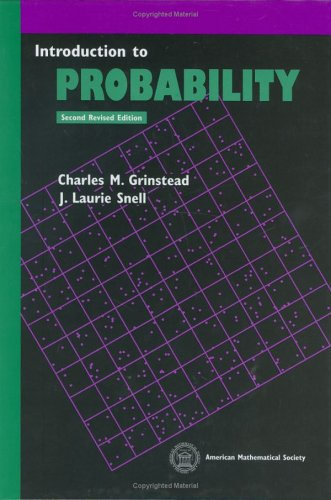

Introduction to Probability
By Grinstead and Snell.
Book is available in the
following link

These are my proposed solutions. If you find any mistakes, please let me know.
A lot of simulation exercises. This was done in R.
Chapter 1 - Discrete Probability Distributions
1.1 Simulation of Discrete Probabilities
1.2 Discrete Probability Distributions
Chapter 2 - Continuous Probability Densities
2.1 Simulation of Continuous Probabilities
2.2 Continuous Density Functions
Chapter 3 - Combinatorics
3.1 Permutations
3.2 Combinations
3.3 Card Shuffling
Chapter 4 - Conditional Probability
4.1 Discrete Conditional Probability
4.2 Continuous Conditional Probability
4.3 Paradoxes
Chapter 5 - Distributions and Densities
5.1 Important Distributions
5.2 Important Densities
Chapter 6 - Expected Value and Variance
6.1 Expected Value
6.2 Variance of Discrete Random Variables
6.3 Continuous Random Variables
Chapter 7 - Sums of Random Variables
7.1 Sums of Discrete Random Variables
7.2 Sums of Continuous Random Variables
Chapter 8 - Law of Large Numbers
8.1 Discrete Random Variables
8.2 Continuous Random Variables
Chapter 9 - Central Limit Theorem
9.1 Bernoulli Trials
9.2 Discrete Independent Trials
9.3 Continuous Independent Trials
Chapter 10 - Generating Functions
10.1 Discrete Distributions
10.2 Branching Processes
10.3 Continuous Densities
Chapter 11 - Markov Chains
11.1 Introduction
11.2 Absorbing Markov Chains
11.3 Ergodic Markov Chains
11.4 Fundamental Limit Theorem
11.5 Mean First Passage Time
Chapter 12 - Random Walks
12.1 Random Walks in Euclidean Space
12.2 Gambler’s Ruin
12.3 Arc Sine Laws